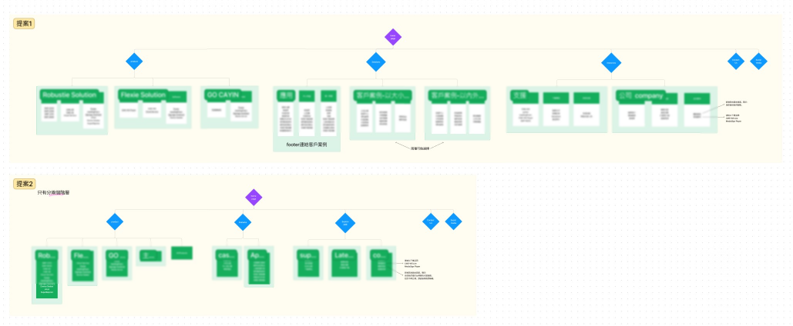
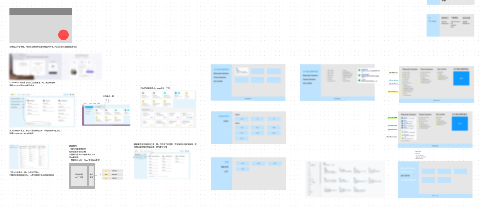
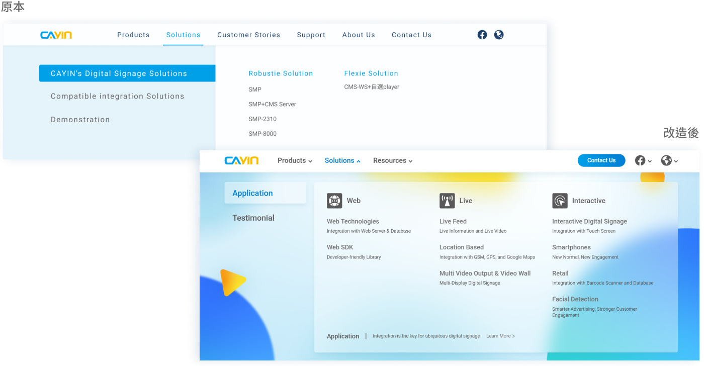

專案背景
CAYIN 鎧應科技是一家專注於設計數位廣告看板播放器、以及播放軟體的一家科技公司。公司近年為了擴展市場推出了數個全新定位的產品系列，希望能與過往產品系列做出區隔、同時增進銷售，因此決定進行選單的再設計及產品架構的重新規劃。此外，也因官網頁面日漸增加，希望能藉由資訊架構的重新規劃，促進使用者體驗。
問題提出及假設
經由實際聽取使用者的反饋，我們發現他們普遍遇到的問題是，進到官網後不知道該如何找到合適的產品，在我們進行進一步的分析後發現主因可能是分類過多、無法判斷方案差異、以及無法用產品名稱判斷其用途。
另外，除了分類數量過多，我們也發現舊有的資訊架構存在資訊量差異過大的問題，部分下拉選單中放置過多的資訊，導致使用者閱讀上的困難。
我們也接收到使用者針對操作上提出反饋，像是使用Hover的方式進行下拉選單的切換，會導致他們在操作時容易誤觸到其他選項。
專案目標
讓使用者在選單就可初步判斷產品及銷售方案的定位，幫助他們找到合適的頁面。
改進資訊架構及互動體驗，讓使用者能更方便瀏覽。
呈現專業又不失活力的形象，並強化與數位多媒體、廣告看板的關聯性。
討論過程
資訊架構建立
為了解決以上問題，首先與銷售人員進行了討論並確立銷售上的方案內容、以及銷售重點，幫助建立大致的層級規劃方向。接下來便開始進行資訊分類、重要性分析、資料量分配，並在最終提出共 2 個方案進行提案。
* 截圖經模糊處理
Wireframe 繪製
在開始繪製 wireframe 前，為了確保使用者體驗，我們蒐集了擁有了類似資訊層級的網站選單進行了分析，依據分析內容繪製了符合使用者使用習慣的選單設計。
* 截圖經模糊處理
設計稿提案
在這個階段，針對不同的資訊架構我們分別設計了下圖中的幾個設計方案，並與銷售及產品部門進行討論、決議最終的設計方向。
設計策略
資訊層級上，我們將所有內容進行重新檢視，並參考市面上既有的網站，使用常見的分類進行重新組織，此外，我們也在細項分類上加入對應的符號，並確保各分類的內容擁有相近的項目數量，利用以上方式減少使用者識別的困難度以及閱讀的時間。為了進一步幫助使用者找到自己想閱覽的頁面，我們也在選項中加入輔助用的簡介文字。
視覺上，為了讓使用者在觀看時能與品牌以及數位廣告看板產生聯想，我們在色彩上採用了品牌 LOGO 的色系，並在背景中採用了富有動態以及活力的元素。
設計前後對比
與原設計去做對比，可以發現左側的選單選項變少，僅保留了兩個銷售方案，並新增了最新推出產品的選項，讓不了解產品的顧客能從該選項的內容快速開始探索，同時也促進新推出產品的銷售。 另外，改良後的設計在連結下方加上了說明文字，這幫助使用者在選單中就能大致判斷產品的用途，讓使用者更快速的在網站中找到自己需要的內容。
原設計中可以看到「 解決方案 (Solutions) 」及「 客戶案例 (Customer Stories) 」是分別獨立在導覽列之中，在資訊架構規劃的階段，我們發現這兩個分類的性質相近，皆是幫助使用者判斷產品該如何實際使用的應用範例，因此決定將兩個內容做整合，同時也將案例依照性質做分類排序，讓使用者能更快速查找到資訊。
其他輔助類資訊，例如售後的支援、教學影片、以及公司資訊，我們同樣將他們進行整合，避免輔助類資訊在導覽列中佔據過多的比例。